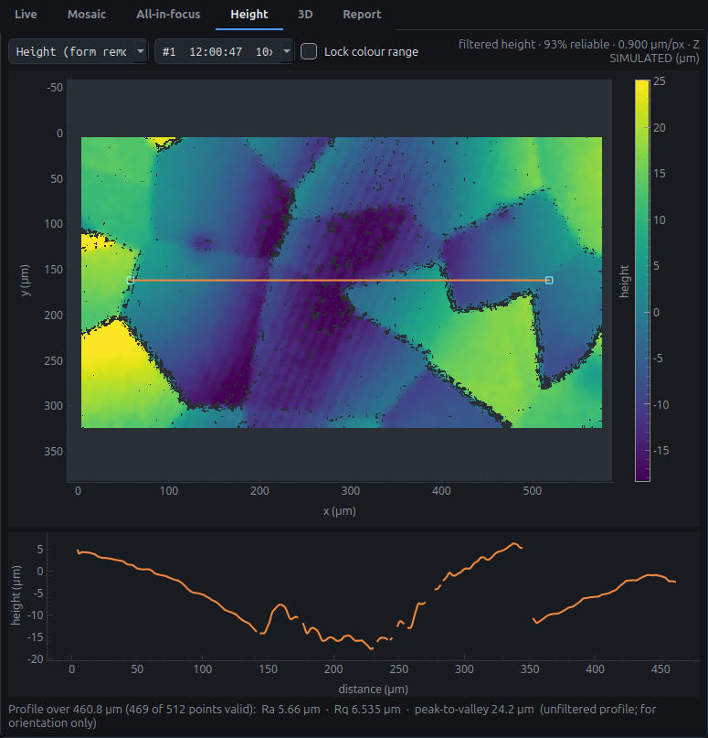
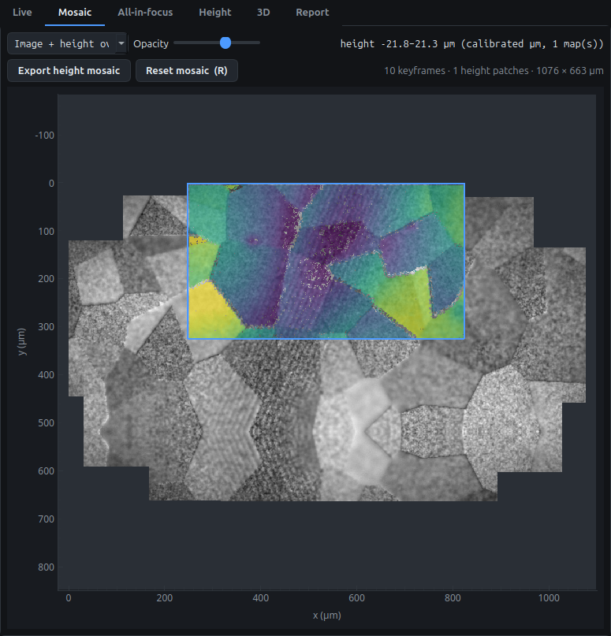
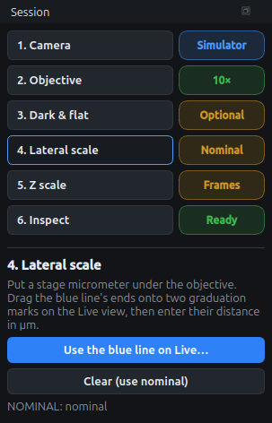

A height map from a focus sweep

The sweep technique by hand, what the coach line tells you, reading the map, profiles and the 3D view, and repeatability.
Mapping with the X-Y stage

Growing a mosaic, what to do when tracking is lost, pinning height maps into it, and rotating the views for a camera that sits askew.
Calibration for real units

Dark and flat frames, µm per pixel from a stage micrometer, and µm per focus frame from the knob scale.